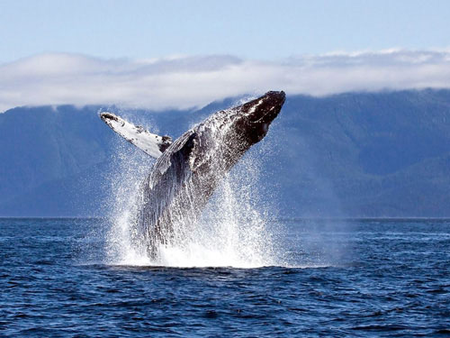
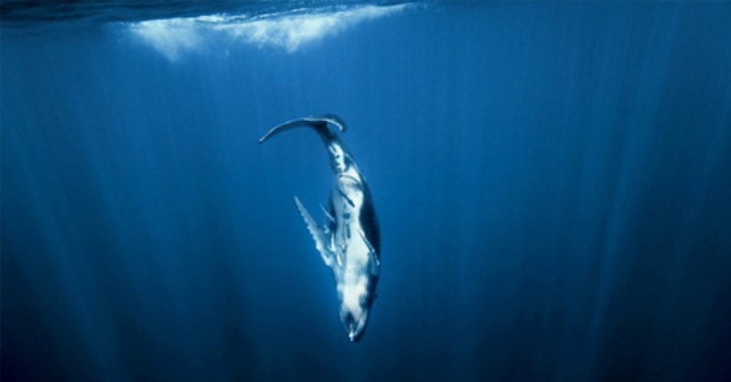
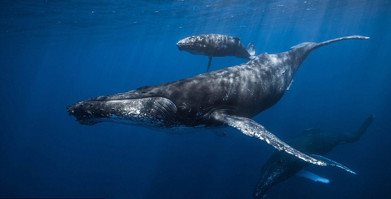

座头鲸虽然不是世界上最大的鲸类，但也是海洋中当之无愧的庞然大物，体型肥大而臃肿，座头鲸成体平均体长雄性为12.9米，雌性为13.7米，最大记录雌性18米。体重25~30 吨。它的头相对较小，扁而平，吻宽，嘴大，嘴边有20~30个肿瘤状的突起，有趣的是每个突起的上面都长出一根毛，而身体的其他部位却全都没有毛。鲸须短而宽，每侧都在200条以上。背鳍较低，短而小，背部不像其他鲸类那样平直，而是向上弓起，形成一条优美的曲线，故得名“座头鲸”，也叫“弓背鲸”或者“驼背鲸”。胸鳍极为窄薄而狭长，约为550厘米左右，为鲸类中最大者，几乎达体长的三分之一，鳍肢上具有4趾，前缘具不规则的瘤状锯齿，其后缘有波浪状的缺刻，呈鸟翼状，所以又被称为“长鳍鲸”、“巨臂鲸”、“大翼鲸”等。尾鳍宽大，外缘呈不规则钳齿状。脸面褶沟较少，约14~35条很宽的平行纵沟或棱纹，由下颌延伸达脐部。腹部具褶沟。通常身体的背面和胸鳍呈黑色，有斑纹，腹面呈白色，但也有的背面和胸鳍也呈白色。体包个体变异较大，鳍肢上方白色，尾鳍腹面白色，边缘黑色。口大，进食时上下颌间特殊韧带结构可使口张开90度的角度。鲸须每侧有270~400片，须板和须毛皆黑灰色。雌兽体后的下侧长有一条细长的裂口，终止在肛门附近，据说在繁殖的时候，雌兽就是用它包裹住雄兽的生殖器，来完成交配动作的。
座头鲸在各大海洋中均有发现，它们分布在从南极冰缘到北纬65度的广阔海面。这是一个有迁移特点的物种，它们夏天生活在凉爽的高纬度水域，但是在热带或亚热带水域交配繁衍。座头鲸通常每年迁徙路程长达25,000公里（16,000英里），使它们成为哺乳动物中最好旅行者之一。但是生活在阿拉伯海的座头鲸是例外，它们长年都生活在那些热带海域。座头鲸在东地中海、波罗的海和北极海域未被发现。
主要分布国家和地区（海域）：美属萨摩亚、安哥拉、安圭拉岛、安提瓜和巴布达、阿根廷、阿鲁巴岛、澳大利亚、南极洲、巴哈马群岛、孟加拉、巴巴多斯、贝宁，百慕大群岛、巴西、喀麦隆、加拿大、佛得角、开曼群岛、中国、智利、可可岛、哥伦比亚、科摩罗、刚果（布）、库克群岛、哥斯达黎加、科特迪瓦、古巴、丹麦、吉布提、多米尼加、厄瓜多尔、萨尔瓦多、赤道几内亚、福克兰群岛（马尔维纳斯群岛）、法罗群岛、斐济、芬兰、法国、法属波利尼西亚、法属南半球领地、加蓬、冈比亚、加纳、格陵兰岛、格林纳达、瓜德罗普群岛、关岛、危地马拉、海地、洪都拉斯、冰岛、印度、印度尼西亚、伊朗、伊拉克、爱尔兰、牙买加、日本、肯尼亚、基里巴斯、朝鲜、韩国、马来西亚、马尔代夫、马绍尔群岛、马达加斯加、马耳他、马提尼克群岛、毛里塔尼亚、毛里求斯、墨西哥、摩洛哥、马约特岛、莫桑比克、缅甸、纳米比亚、瑙鲁、荷属安的列斯群岛、新卡里多尼亚、新西兰、尼加拉瓜、尼日利亚、纽埃岛、北马里亚纳群岛、挪威、阿曼、巴基斯坦、帕劳、巴拿马、巴布亚新几内亚、秘鲁、菲律宾、皮特克恩岛、波多黎各、留尼汪、俄罗斯、圣赫勒拿、阿森松、波兰、葡萄牙，圣基特和尼维斯岛、圣卢西亚、圣文森特和格陵纳丁斯、西萨摩亚、圣皮埃尔和密克隆群岛、圣多美和普林西比、所罗门群岛、塞舌尔、索马里、西班牙、斯里兰卡、斯瓦尔巴特和扬马延岛、中国台湾省、坦桑尼亚、东帝汶、多哥、汤加、特立尼达和多巴哥、突尼斯、特克斯和凯科斯群岛、图瓦卢、阿联酋、英国、美国、乌拉圭、瓦努阿图、委内瑞拉、越南、维京群岛、瓦利斯群岛和富图纳群岛、西撒哈拉、也门。
洄游
多成对活动，性情温顺，同伴间眷恋性很强。每年进行有规律的南北洄游：夏季洄游到冷水海域索饵，冬季到温暖海域繁殖，洄游期不进食。游泳速度较慢。每小时约为8~15公里，常发出类似“唱歌”的繁杂声音。 [2]
捕食
这种庞然大物以鳞虾这种体长还不到1厘米的小型甲壳动物为主要食物的，此外还有鳞鱼、毛鳞鱼、玉筋鱼和其他小型鱼类等。它的嘴张开时，其特殊的弹性韧带能够使下腭暂时脱落，形成超过90度的角度，口的横径可达到4.5米，可以一口吞下大量的磷虾或较小的鱼类，但其食道的直径则显得大小，不能吞下较大的食物，这可能就是它只能吃小动物的原因之一。由于越冬期间好几个月都不进食，为了维持那硕大无朋的身躯所需要的体能，在夏季里便要吃大量的食物，常常可以连续吃上18个小时。由于日照充足，北方冰川地带的海湾里浮游生物大量滋生，养育了以浮游动物为食的鳞虾，数量巨大，常常数百万只群集在一起，因此为座头鲸提供了极为丰盛的食物来源。
座头鲸进食的方法也很奇妙，首先是冲刺式进食法，将下腭张得很大，侧着或仰着身子朝虾群冲过去，然后把嘴闭上，下腭下边的折皱张开，吞进大量的水和虾，最后将水排除出去，把虾吞食；第二种方法叫轰赶式进食法，将尾巴向前弹，把虾赶向张开的大嘴，这种方法也是只有当虾特别密集时才适用；第三种方法是从大约15米深处作螺旋形姿势向上游动，并吐出许多大小不等的气泡，使最后吐出的气泡与第一个吐出的气泡同时上升到水面，形成了一种圆柱形或管形的气泡网，像一只巨大的海中蜘蛛编结成的蜘网一样，把猎物紧紧地包围起来，并逼向网的中心，它便在气泡圈内几乎直立地张开大嘴，吞下网集的猎物。这种捕食方法，同捕鱼者用两只渔船拉曳大型渔网，逐渐迫使鱼虾接近水面，然后一网打尽的情景一样。当猎物数量稀少时，座头鲸常常单独或仅有2~3只在一起觅食，而当猎物数量很多时，便形成8只左右的较大群体，有时不同群体之间还会互相争食。因此，有时食物的多少、分布和种类，也会直接影响座头鲸的数量。
活动
座头鲸是有社会性的一种动物，性情十分温顺可亲，成体之间也常以相互触摸来表达感情，但在与敌害格斗时，则用特长的鳍状肢，或者强有力的尾巴猛击对方，甚至用头部去顶撞，结果常造成皮肉破裂，鲜血直流。它游泳的速度很慢，每小时约为8~15公里，在海面缓缓游动时，就像一座冰山一样，身体的大部分沉在水下，有时又象是一个自由飘浮的小岛，人们在海岸上也能看到它露出海面的身体。游泳、嬉水的本领十分高超，有时先在水下快速游上一段路程，然后突然破水而出，缓慢地垂直上升，直到鳍状肢到达水面时，身体便开始向后徐徐地弯曲，好像杂技演员的后滚翻动作。它可以钻入水中快速潜水游动，仅用几秒钟就消失在波浪之下，进入了昏暗的深渊。露出水面呼吸时，从鼻孔里会喷出一股短粗而灼热的一种油和水蒸汽混合的气体，把周围的海水也一起卷出海面，形成一股蔚为壮观的水柱，同时发出洪亮的类似蒸汽机发出的声音，被称之为“喷潮”或“雾柱”。有时它还兴奋得全身跃出水面，高度可达6米，落水时溅起的水花声在几公里外都能听到，动作从容不迫，优美动人。在它的皮肤上不仅常附着藤壶和茗荷等蔓足类动物，而且携带着许多有吸盘的动物，加起来足有半吨重之多，然而这似乎丝毫也不影响它的行动和情绪。
发音
雄性座头鲸每年约有6个月时间整天都在唱歌，而且其歌声中敲击音与纯正音的比例与西方交响乐中两者的比例非常类似。这种庞然大物至少能够发出7个八度音阶的音，但它不是毫无章法地在吼叫，而是按照一定的节拍、音阶长度和音乐短语来歌唱。
研究人员还发现，座头鲸还十分擅长用一种人类歌唱家常用的“A—B—A”格式来演唱，即先演唱一段旋律，接着进一步阐述，然后再回到稍加改变的原旋律上来。此外，它们还会进行“艺术交流”，印度洋的座头鲸移居到澳大利亚的太平洋海域后，不出三年时间，澳洲“土著”座头鲸就放弃了它们的传统曲目，转而演唱这些外来户带来的新曲。
野生种群
中国：
大部分栖息于太平洋一带，总数只剩下4000只左右。中国黄海、东海、南海均有分布。 1952年11月，福建省福清县搁浅1头。 1989年3月30日，福建连江县误捕1头。 广东汕头至海南岛一带，经常有座头鲸出没，尤以惠阳县大亚湾为主要渔场，20世纪50年代初期每天都可以发现数十头。1996年4月30日，1头座头鲸在大鹏澳沙滩搁浅。 海南岛文昌县的七洲、琼东县近海于1957~1959年均有搁浅，1975年仍有搁浅报道。 1959年3月20日，大连海洋岛渔场发现1头座头鲸，南海区以台湾省南部为主要渔场，广东省惠阳县大亚湾12月至翌年3月也曾有捕获。 1962年，山东石岛渔场获1头。 2006年1月31日，1头座头鲸在福建搁浅后死亡。 2009年3月18日，香港海域发现1头座头鲸。
全球：
北大西洋和北太平洋种群分别约10,400和6,000头。 种群呈现上升趋势，全球数量未知，但根据IWC科学委员会最新的数量评估，种群已经恢复至1940年的水平，虽然总体趋势在增长，部分种群仍处于受威胁的状态。
生存威胁
海滩搁浅
2010年10月，多达80头座头鲸在新西兰北部一处偏远海滩搁浅，其中至少40头不幸死亡。这已经是该地区近一个月来发生的第二宗座头鲸集体搁浅事件。同年8月曾有58头座头鲸在新西兰凯里凯利海滩搁浅，尽管当时有数百人协助它们脱困，但最终只有9头鲸鱼回到大海。2007年时，也有101头座头鲸在同一海滩上搁浅。据新西兰环保部门统计，自1840年以来，已有超过5000头鲸豚在该国海岸附近搁浅。这一现象通常发生在鲸类进出南极水域的时候，但专家们迄今仍未能查出它们搁浅的原因。
船只碰撞
每年12月至次年4月，1万多头鲸目动物聚集在美国夏威夷周围海域进行繁殖。而座头鲸在夏威夷海域正面临新的危险，这一结论是分析1975年至2011年轮船致座头鲸死亡的历史记录后得出的。在这36年间，共报道了68个船只碰撞鲸鱼的事件，其中包括撞击伤害一只座头鲸幼仔。
科学家尚未确定受到致命伤害或当场死亡的鲸鱼数量，因为有超过63%的座头鲸碰撞事件涉及到幼鲸和接近成年的座头鲸。科学家认为，这些幼鲸更容易受到伤害，因为和成年座头鲸相比，它们会花更多的时间浮出水面呼吸。
令人担忧的是，碰撞鲸鱼的数量每年都在稳步上升。据《鲸类动物研究与管理杂志》报道，这并不是因为鲸鱼数量的增多，相反，事件的增多很显然是由于旅游业的发展。和座头鲸在夏威夷海域发生碰撞的船只中，大部分是中小型船只（船身长度少于21.2米），科学家表示，发生碰撞船只的尺寸恰好是商业观鲸船的大小。美国联邦法规要求这些船只至少要离座头鲸100码。观鲸游客的船只除了要保持适当的距离外，还要保持适当的速度：该团队发现，大多数碰撞发生时，船只以10~19节的航速行进—很明显，过快的速度导致船只和座头鲸发生碰撞。
商业捕杀
2007年日本开始了南太平洋捕鲸活动。令人惊讶的是，该次的捕杀名单上，竟然有濒危的座头鲸。早在1986年，国际捕鲸委员会就禁止商业捕鲸以保护濒临灭绝的鲸。但日本一直以科研为名继续大肆捕鲸，2007年以前的10年里，已经捕杀了1万多头鲸，2007年的捕杀计划更是高达1035头，数量是1997年的两倍多。尽管日本辩解说，鲸的数量已经反弹，不会有灭绝危险，但国际社会反对这种大规模捕杀的声音一直不绝于耳。